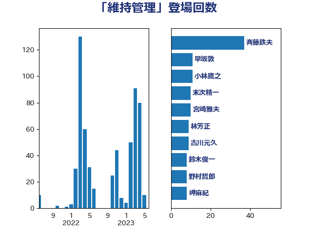

単語「維持管理」

| 斉藤鉄夫 | 公明党 | 37 回 |
| 早坂敦 | 日本維新の会 | 11 回 |
| 小林鷹之 | 自由民主党 | 11 回 |
| 末次精一 | 立憲民主党 | 10 回 |
| 宮崎雅夫 | 自由民主党 | 10 回 |
| 林芳正 | 自由民主党 | 9 回 |
| 古川元久 | 国民民主党 | 9 回 |
| 鈴木俊一 | 自由民主党 | 8 回 |
| 野村哲郎 | 自由民主党 | 8 回 |
| 岬麻紀 | 日本維新の会 | 8 回 |
| 松本剛明 | 自由民主党 | 7 回 |
| 末松信介 | 自由民主党 | 7 回 |
| 岸田文雄 | 自由民主党 | 7 回 |
| 山本剛正 | 日本維新の会 | 7 回 |
| 竹詰仁 | 国民民主党 | 6 回 |
| 青柳陽一郎 | 立憲民主党 | 5 回 |
| 角田秀穂 | 公明党 | 5 回 |
| 西岡秀子 | 国民民主党 | 5 回 |
| 福島伸享 | 無所属 | 5 回 |
| 小倉將信 | 自由民主党 | 5 回 |
| 北神圭朗 | 無所属 | 5 回 |
| 馬淵澄夫 | 立憲民主党 | 4 回 |
| 長友慎治 | 国民民主党 | 4 回 |
| 西銘恒三郎 | 自由民主党 | 4 回 |
| 羽田次郎 | 立憲民主党 | 4 回 |
| 盛山正仁 | 自由民主党 | 4 回 |
| 清水貴之 | 日本維新の会 | 4 回 |
| 池下卓 | 日本維新の会 | 4 回 |
| 塩川鉄也 | 日本共産党 | 4 回 |
| 伊藤岳 | 日本共産党 | 4 回 |
| 高市早苗 | 自由民主党 | 3 回 |
| 進藤金日子 | 自由民主党 | 3 回 |
| 枝野幸男 | 立憲民主党 | 3 回 |
| 後藤茂之 | 自由民主党 | 3 回 |
| 小沢雅仁 | 立憲民主党 | 3 回 |
| 寺田静 | 無所属 | 3 回 |
| 城井崇 | 立憲民主党 | 3 回 |
| 和田政宗 | 自由民主党 | 3 回 |
| 勝俣孝明 | 自由民主党 | 3 回 |
| 中村裕之 | 自由民主党 | 3 回 |
| 三浦靖 | 自由民主党 | 3 回 |
| 鬼木誠 | 立憲民主党 | 2 回 |
| 高橋千鶴子 | 日本共産党 | 2 回 |
| 金子恵美 | 立憲民主党 | 2 回 |
| 野田佳彦 | 立憲民主党 | 2 回 |
| 道下大樹 | 立憲民主党 | 2 回 |
| 輿水恵一 | 公明党 | 2 回 |
| 西村康稔 | 自由民主党 | 2 回 |
| 船橋利実 | 自由民主党 | 2 回 |
| 篠原豪 | 立憲民主党 | 2 回 |
| 笠井亮 | 日本共産党 | 2 回 |
| 穂坂泰 | 自由民主党 | 2 回 |
| 稲津久 | 公明党 | 2 回 |
| 福重隆浩 | 公明党 | 2 回 |
| 石垣のりこ | 立憲民主党 | 2 回 |
| 石井苗子 | 日本維新の会 | 2 回 |
| 田村貴昭 | 日本共産党 | 2 回 |
| 片山大介 | 日本維新の会 | 2 回 |
| 深澤陽一 | 自由民主党 | 2 回 |
| 東国幹 | 自由民主党 | 2 回 |
| 山口壯 | 自由民主党 | 2 回 |
| 小野泰輔 | 日本維新の会 | 2 回 |
| 大西健介 | 立憲民主党 | 2 回 |
| 堀場幸子 | 日本維新の会 | 2 回 |
| 倉林明子 | 日本共産党 | 2 回 |
| 中西祐介 | 自由民主党 | 2 回 |
| 中司宏 | 日本維新の会 | 2 回 |
| 一谷勇一郎 | 日本維新の会 | 2 回 |
| たがや亮 | れいわ新選組 | 2 回 |
| おおつき紅葉 | 立憲民主党 | 2 回 |
| 高木陽介 | 公明党 | 1 回 |
| 青柳仁士 | 日本維新の会 | 1 回 |
| 青木愛 | 立憲民主党 | 1 回 |
| 阿部司 | 日本維新の会 | 1 回 |
| 鈴木義弘 | 国民民主党 | 1 回 |
| 金子恭之 | 自由民主党 | 1 回 |
| 野田国義 | 立憲民主党 | 1 回 |
| 辻元清美 | 立憲民主党 | 1 回 |
| 足立敏之 | 自由民主党 | 1 回 |
| 萩生田光一 | 自由民主党 | 1 回 |
| 菊田真紀子 | 立憲民主党 | 1 回 |
| 菅義偉 | 自由民主党 | 1 回 |
| 若林健太 | 自由民主党 | 1 回 |
| 若松謙維 | 公明党 | 1 回 |
| 美延映夫 | 日本維新の会 | 1 回 |
| 緑川貴士 | 立憲民主党 | 1 回 |
| 福田昭夫 | 立憲民主党 | 1 回 |
| 石川香織 | 立憲民主党 | 1 回 |
| 石原正敬 | 自由民主党 | 1 回 |
| 矢倉克夫 | 公明党 | 1 回 |
| 田村まみ | 国民民主党 | 1 回 |
| 田所嘉徳 | 自由民主党 | 1 回 |
| 牧義夫 | 立憲民主党 | 1 回 |
| 湯原俊二 | 立憲民主党 | 1 回 |
| 渡辺博道 | 自由民主党 | 1 回 |
| 渡辺創 | 立憲民主党 | 1 回 |
| 清水真人 | 自由民主党 | 1 回 |
| 浮島智子 | 公明党 | 1 回 |
| 浜野喜史 | 国民民主党 | 1 回 |
| 浜田靖一 | 自由民主党 | 1 回 |
| 河西宏一 | 公明党 | 1 回 |
| 永岡桂子 | 自由民主党 | 1 回 |
| 柳本顕 | 自由民主党 | 1 回 |
| 柚木道義 | 立憲民主党 | 1 回 |
| 松山政司 | 自由民主党 | 1 回 |
| 日下正喜 | 公明党 | 1 回 |
| 斎藤洋明 | 自由民主党 | 1 回 |
| 川田龍平 | 立憲民主党 | 1 回 |
| 岸真紀子 | 立憲民主党 | 1 回 |
| 岩本剛人 | 自由民主党 | 1 回 |
| 岡田直樹 | 自由民主党 | 1 回 |
| 山本香苗 | 公明党 | 1 回 |
| 山崎誠 | 立憲民主党 | 1 回 |
| 尾身朝子 | 自由民主党 | 1 回 |
| 小西洋之 | 立憲民主党 | 1 回 |
| 小熊慎司 | 立憲民主党 | 1 回 |
| 小山展弘 | 立憲民主党 | 1 回 |
| 小宮山泰子 | 立憲民主党 | 1 回 |
| 室井邦彦 | 日本維新の会 | 1 回 |
| 安江伸夫 | 公明党 | 1 回 |
| 奥野総一郎 | 立憲民主党 | 1 回 |
| 大野敬太郎 | 自由民主党 | 1 回 |
| 大島敦 | 立憲民主党 | 1 回 |
| 塩田博昭 | 公明党 | 1 回 |
| 和田有一朗 | 日本維新の会 | 1 回 |
| 吉良よし子 | 日本共産党 | 1 回 |
| 吉田とも代 | 日本維新の会 | 1 回 |
| 加藤竜祥 | 自由民主党 | 1 回 |
| 加藤勝信 | 自由民主党 | 1 回 |
| 井上哲士 | 日本共産党 | 1 回 |
| 中根一幸 | 自由民主党 | 1 回 |
| 上田勇 | 公明党 | 1 回 |
| 三上えり | 立憲民主党 | 1 回 |